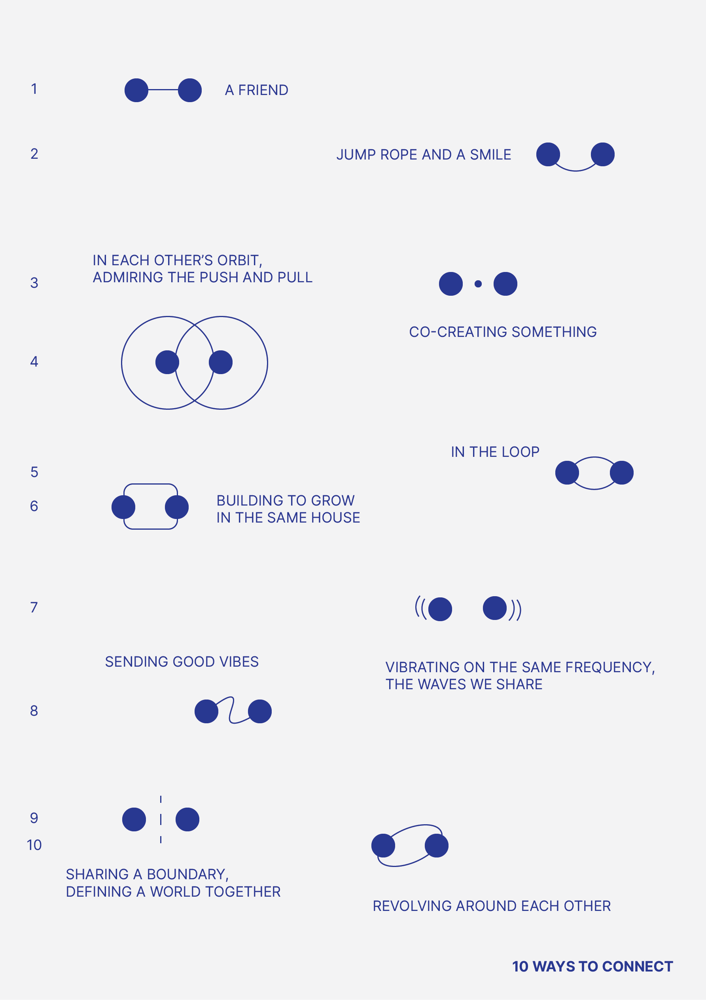

| ID | Name | Type |
|---|---|---|
| 04 | 10 Ways to Connect | Visual Design |

Details
A friend once told me that when there are two dots and a line, people usually associate the diagram as an illustration of a friendship. Later, when I asked him for more information or a source, he said he made it up, but the idea stuck.
It is interesting how two dots and a line can look like a friendship. I really love simple, minimal design, they have an elegance where the building blocks are visible. You see the dots and lines and you can see exactly how it was composed.
Here I've created 10 scenarios between two dots and some lines.
A dot, a line, and then a dot.
